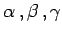
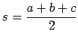

Inhalt Index DeskTop Bronstein

 Geometrie Ebene Trigonometrie Berechnungen in ebenen schiefwinkligen Dreiecken Grundformeln und Sätze
Geometrie Ebene Trigonometrie Berechnungen in ebenen schiefwinkligen Dreiecken Grundformeln und Sätze


Es werden die folgenden Bezeichnungen verwendet: a, b, c - Seiten;  - die ihnen gegenüberliegenden Winkel; S - Flächeninhalt; R - Radius des Umkreises; r - Radius des Inkreises;
 - halber Dreiecksumfang.
Da im schiefwinkligen Dreieck alle Seiten gleichberechtigt sind, ebenso alle Winkel, können aus jeder für bestimmte Seiten und Winkel bewiesenen Formel zwei weitere gewonnen werden, wenn Seiten und Winkel gemäß der folgenden Abbildung zyklisch vertauscht werden.
| Beispiel |
|
Aus (Sinussatz) erhält man durch zyklische Vertauschung: |